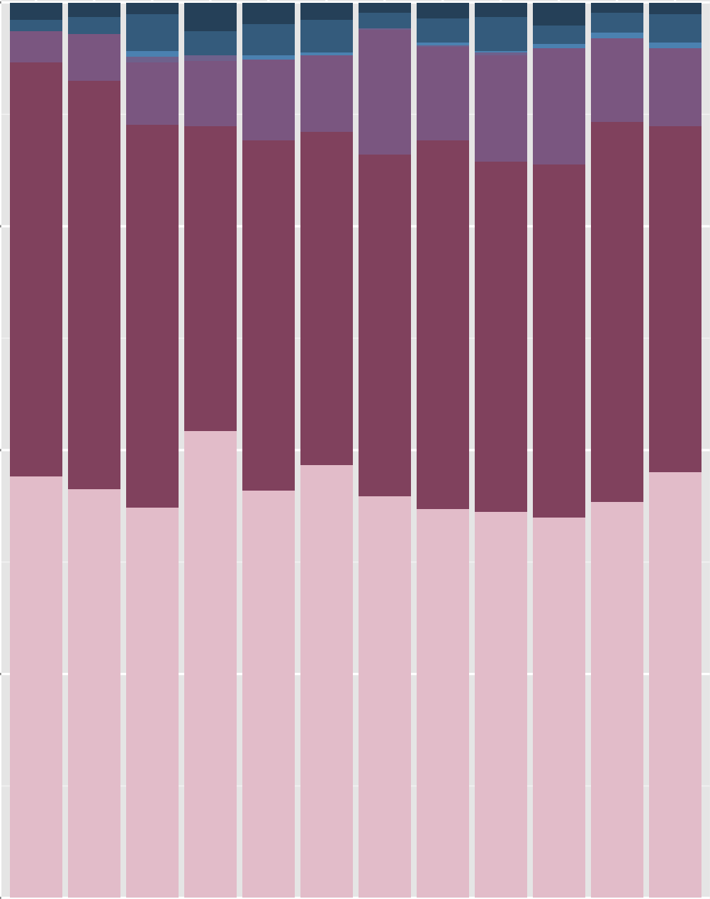
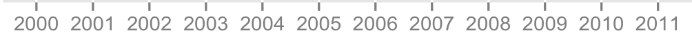
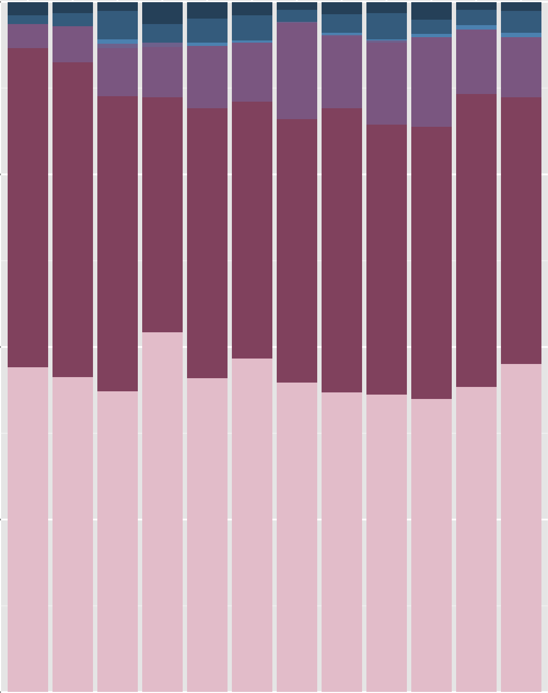
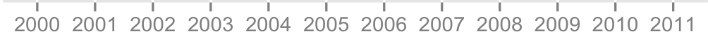

San Francisco Bicycle-Injury Crashes 2000 - 2011
The number of bicycle-injury accidents in San Francisco increased 55 percent between 2000 and 2011 with the highest number of crashes occurring in 2010 with 629. Most of the crashes occurred on Market, Mission and Valencia streets. Crashes occurred most often at intersections and during commuting hours around 8:30 a.m. or 6 p.m.
Of the 5133 crashes recorded during this time period, 26 resulted in fatalities.
Crashes occurred slightly more frequently on Thursday than any other day of the week and more often than not, on clear or slightly cloudy days with normal road conditions.
About half of the time, bicyclists are at fault for the crashes. The other half of the time, drivers are at fault. Below is graph showing the percent change of who is at fault in bicycle-injury crashes, according to data compiled from San Francisco police reports.
- 0
- 20
- 40
- 60
- 80
- 100
- 120
- 130
- 150
Bicycle Fatalities
The gray crosses represent all of the San Francisco bicycle-injury crashes between 2000 and 2011. The red circles indicate the crashes that resulted in a fatality.

Who's at fault?
This graph shows the percent change of who is at fault in bicycle-injury accidents
 



- Pedestrian
- Parked Vehicle
- Other
- Not Stated
- NA
- Driver
- Bicyclists